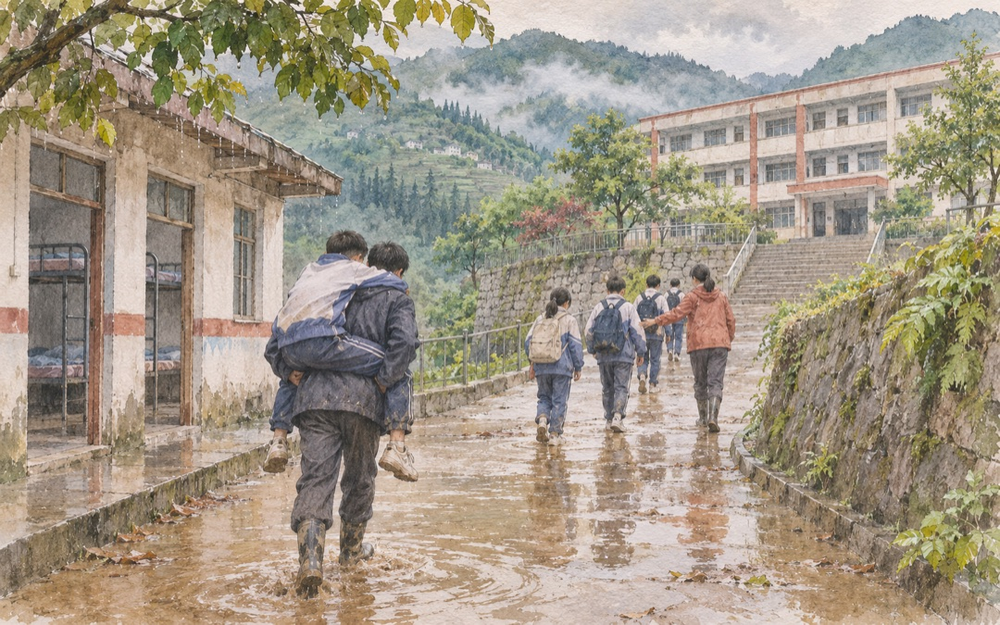

茅田民族初级中学 · 2023 年
从宿舍到食堂，老师们走了十多趟

7 月 4 日清晨五六点，茅田民族初级中学一名八年级女生被值班老师叫醒。水已经漫进宿舍一楼。乡干部和校长黄发平带着教职工赶来，决定把学生转移到地势较高的食堂。
黄发平背起了这名女生。她后来向记者回忆，刚醒来时看到水，心里很害怕，等校长背起自己，才安下心来。把一批学生送到食堂后，教职工又折回宿舍，接下一批。
那天参与转移的教职工平均每人来回走了十多趟。140 多名学生全部撤到安全的地方，没有学生受伤。记者当天再到茅田采访时，学校已经恢复了正常教学。